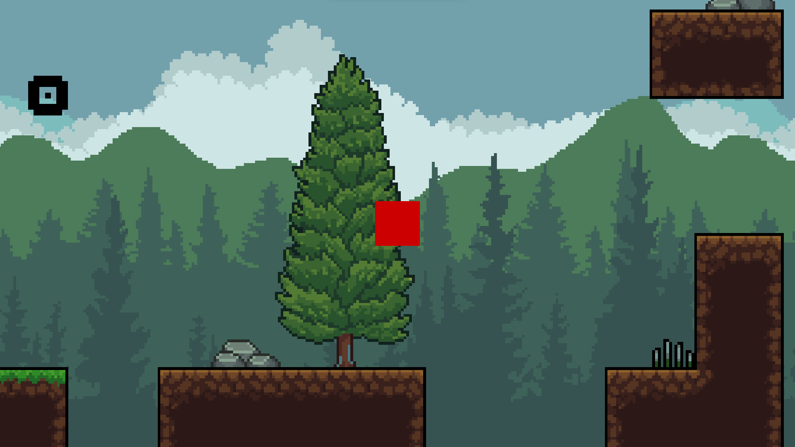

Music Web Application
Full-stack music app created with Next.js, React, Typescript, and Tailwind CSS, deployed at musaic.online. This project required many different technologies that I am not very familiar with, pushing me far outside my comfort zone. I was having problems with processing payments and certain changes not being reflected in the database, but I was happy to have resolved these issues and to move forward with officially deploying to the web for the first time. Though I would like to expand on this project in the future to differentiate it from other music apps, I am content with the features I was able to provide.
Learn more

Wordle Application
A recreation of the infamous word game "Wordle" built in .NET MAUI with C#. I encountered a data set with thousands of five-letter words, which inspired me to recreate this game from the ground up without outside help. Though there were some challenges working with the data set, I enjoyed thinking through some of the logic behind validating a player's guess and displaying the appropriate information.
Learn more
Multipurpose Calculator Application
Native iOS application built with Swift. This was part of an Apple workshop series with the university, in which each individual learns the fundamentals of SwiftUI and creates their own application. Connecting multiple functional views together proved to be a challenging task, especially with the layout of a mobile device and the unique native components of an iOS app.
Learn more

2D Unity Platformer
Simple yet satisfying 2D game built with C# using the Unity engine. Entire project created in 48 hours for the Neumont College of Computer Science Summer Game Jam. This was also my first time developing in a game engine, which presented its own set of challenges. Given the short time-frame and my inexperience, I was pleasantly surprised with my final product.
Learn more